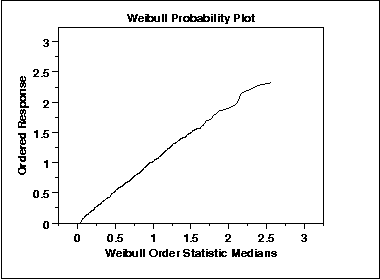

|
1.
Exploratory Data Analysis
1.3. EDA Techniques 1.3.3. Graphical Techniques: Alphabetic
|
|||
|
Purpose: Check If Data Follow a Given Distribution |
The probability plot
(Chambers et al.,
1983) is a graphical technique for assessing
whether or not a data set follows a given distribution
such as the normal or Weibull.
The data are plotted against a theoretical distribution in such a way that the points should form approximately a straight line. Departures from this straight line indicate departures from the specified distribution. The correlation coefficient associated with the linear fit to the data in the probability plot is a measure of the goodness of the fit. Estimates of the location and scale parameters of the distribution are given by the intercept and slope. Probability plots can be generated for several competing distributions to see which provides the best fit, and the probability plot generating the highest correlation coefficient is the best choice since it generates the straightest probability plot. For distributions with shape parameters (not counting location and scale parameters), the shape parameters must be known in order to generate the probability plot. For distributions with a single shape parameter, the probability plot correlation coefficient (PPCC) plot provides an excellent method for estimating the shape parameter. We cover the special case of the normal probability plot separately due to its importance in many statistical applications. |
||
| Sample Plot |

This data is a set of 500 Weibull random numbers with a shape parameter = 2, location parameter = 0, and scale parameter = 1. The Weibull probability plot indicates that the Weibull distribution does in fact fit these data well. |
||
|
Definition: Ordered Response Values Versus Order Statistic Medians for the Given Distribution |
The probability plot is formed by:
The order statistic medians (see Filliben 1975) can be approximated by:
In addition, a straight line can be fit to the points and added as a reference line. The further the points vary from this line, the greater the indication of a departure from the specified distribution. This definition implies that a probability plot can be easily generated for any distribution for which the percent point function can be computed. One advantage of this method of computing proability plots is that the intercept and slope estimates of the fitted line are in fact estimates for the location and scale parameters of the distribution. Although this is not too important for the normal distribution (the location and scale are estimated by the mean and standard deviation, respectively), it can be useful for many other distributions. |
||
| Questions |
The probability plot is used to answer the
following questions:
|
||
|
Importance: Check distributional assumption |
The discussion for the normal
probability plot covers the use of probability plots
for checking the fixed distribution assumption.
Some statistical models assume data have come from a population with a specific type of distribution. For example, in reliability applications, the Weibull, lognormal, and exponential are commonly used distributional models. Probability plots can be useful for checking this distributional assumption. |
||
| Related Techniques | |||
| Case Study | The probability plot is demonstrated in the uniform random numbers case study. | ||
| Software | Most general purpose statistical software programs support probability plots for at least a few common distributions. | ||